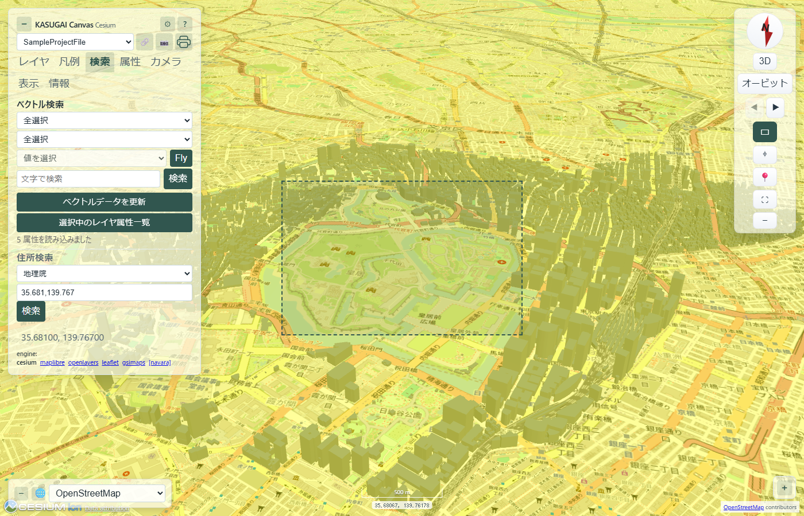
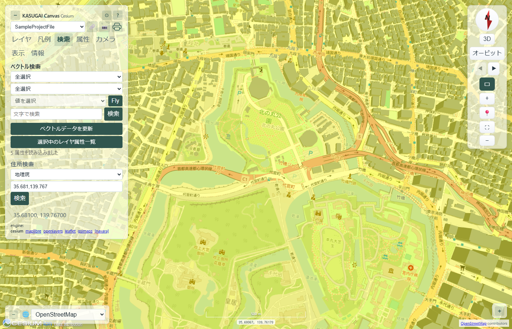

ナビゲーションツールバー（画面右下）の矩形ズームボタンで起動する範囲指定ズームです。
使い方
🔍 矩形ズーム
起動すると左ボタンのドラッグ矩形でズームイン、矩形の頂点をクリックで選択範囲ズームになります。ダブルクリックで解除します。


設定方法
このツールは .kasc の設定行を持ちません（UI 操作のみです）。関連するレイヤー設定は 6-2 インスペクター を参照してください。
3-3 矩形ズーム — ナビゲーションツールバーの範囲指定ズーム
ナビゲーションツールバー（画面右下）の矩形ズームボタンで起動する範囲指定ズームです。
起動すると左ボタンのドラッグ矩形でズームイン、矩形の頂点をクリックで選択範囲ズームになります。ダブルクリックで解除します。


このツールは .kasc の設定行を持ちません（UI 操作のみです）。関連するレイヤー設定は 6-2 インスペクター を参照してください。